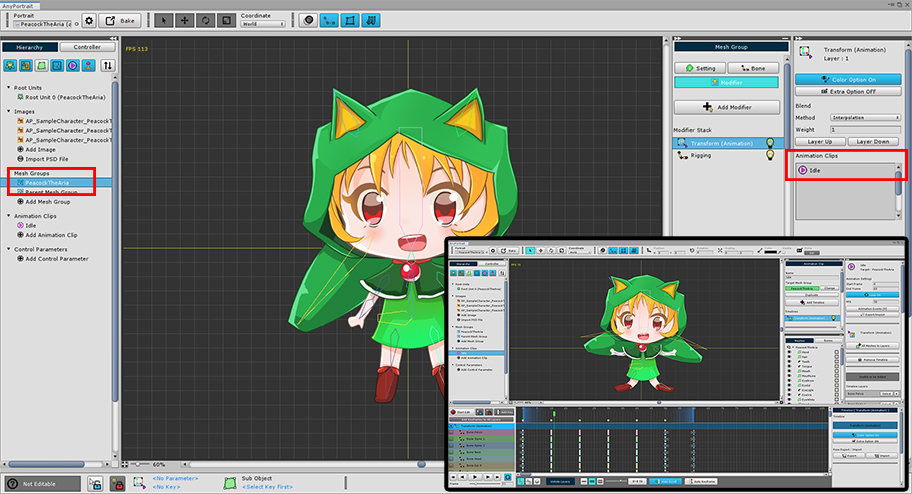
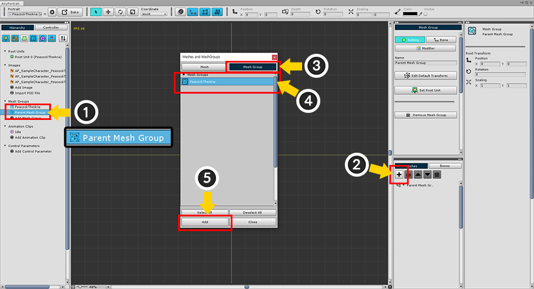
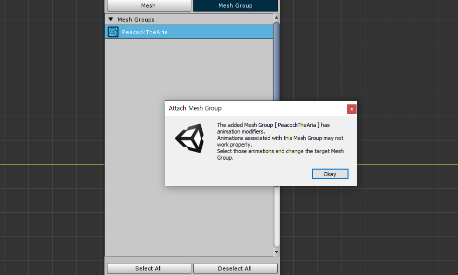
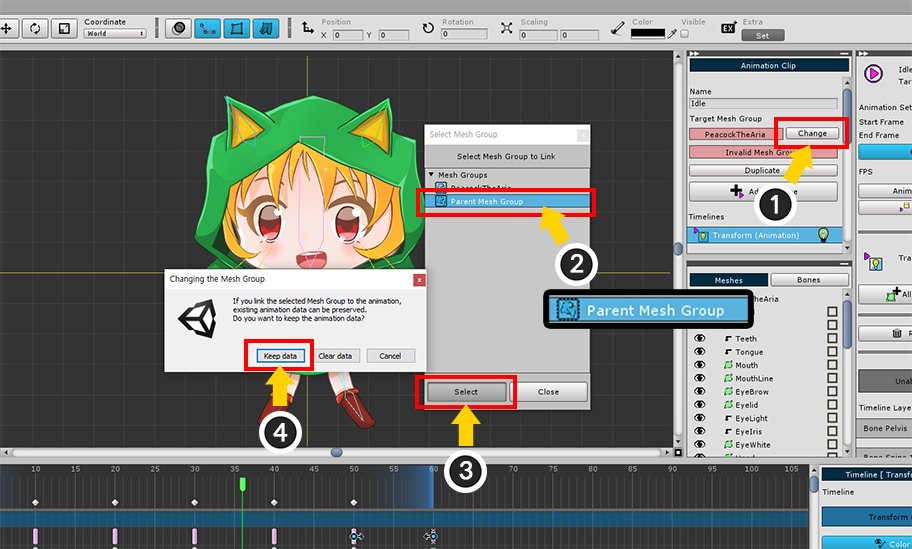

AnyPortrait > マニュアル > 子メッシュグループのアニメーションの問題
子メッシュグループのアニメーションの問題
1.1.8
この機能は非常に便利ですが、たまにいくつかの問題を引き起こす可能性があります。
代表的な場合は、アニメーションが正しく実行されないということです。
この問題は、「アニメーションクリップが子メッシュグループと接続されているときに」発生します。
AnyPortraitのアニメーションクリップは、その対象が「ルートユニット（Root Unit）」のときのみ有効で、ルートユニットになることがない子メッシュグループのアニメーションは、Bake時には無視されます。
したがって、原則的には、アニメーションクリップは、子メッシュグループを対象とすることができません。
しかし、次の順序で「アニメーションクリップと関連付けられた子メッシュグループ」が存在することができます。
1) メッシュグループにアニメーションモディファイヤを追加して、アニメーションクリップを作成して接続します。
2) アニメーションが作成されたメッシュグループを他のメッシュグループの子として登録します。
既にアニメーションを作った状態で対象となるメッシュグループを他のメッシュグループの子として登録すれば、あなたが一生懸命制作したアニメーションは、Bake対象もされず、正常に実行されないでしょう。
v1.1.8から「アニメーションの対象」を「親メッシュグループ」に変更する場合は、アニメーションデータが維持される機能が追加されました。
このページでは、問題が発生する状況とその解決方法について説明します。

アニメーションが製作された典型的な例です。
メッシュグループに「Transform（Animation）モディファイヤ」が登録されており、「Idle」という名前のアニメーションが制作された状態です。

親メッシュグループを作成してみましょう。
(1) 「Parent Mesh Group」という名前の新しいメッシュグループを作成します。
(2) 「+」ボタンを押します。
(3) 「Mesh Group」タブを選択します。
(4) アニメーションが制作されたオリジナルのメッシュグループを選択します。
(5) 「Add」ボタンを押します。

子メッシュグループに追加すると、警告メッセージが表示されます。
上記された「アニメがある子メッシュグループ」に関連するメッセージです。
（もしこの段階では、子メッシュグループに登録しない場合は、「Detach」を実行して、子メッシュグループから除外されます。）

既存のメッシュグループが「Parent Mesh Group」の子メッシュグループに登録されました。

「アニメーションクリップ」を選択すると、「Target Mesh Group」の項目が「Invalid Mesh Group」というテキストと一緒に赤い色のUIで変わっています。
対象となるメッシュグループが「子メッシュグループ」であるからです。
このアニメーションクリップは、Bakeの対象にされておらず、また、編集が正常にできない場合があります。

このアニメーションデータを親である「Parent Mesh Group」に移転してみましょう。
(1) 「Change」ボタンを押します。
(2) メッシュグループリストの中から、現在のメッシュグループの「親メッシュグループ」を選択します。この例では、「Parent Mesh Group」を選択します。
(3) 「Select」ボタンを押します。
(4) アニメーションデータが古いというメッセージが出ます。 「Keep data」ボタンを押します。

アニメーションの対象メッシュグループが親メッシュグループに変更されました。
アニメ情報がそのまま維持されて、正常に編集することができ、再生することができます。
注意
子メッシュグループで親メッシュグループに切り替える場合を除けば、対象メッシュグループを変更するときに、アニメーションのデータはすべて初期化されます。

親メッシュグループを選択すると、「Transform（Animation）モディファイヤ」が自動的に生成され、
「Idle」のアニメーションクリップが登録されているのを見ることができます。